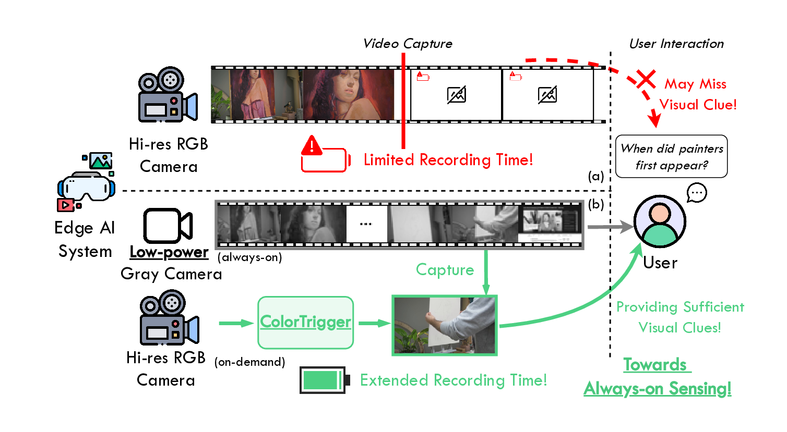

Towards always-on sensing. (a) High-res RGB video pipelines quickly exhaust power on edge AI systems, smart glasses typically sustain only 30–60 min of continuous recording. (b) ColorTrigger uses a low-power grayscale camera as an always-on monitor and sparsely triggers an RGB camera only when needed, enabling always-on video sensing on edge devices.